4.1. ¿Qué es un circuito eléctrico? Elementos de un circuito eléctrico y funciones básicas.
Diccionario
Estructura
Definición
Disposición o modo de estar relacionadas las distintas partes de un conjunto.
Ejemplo
El esqueleto es uno de los elementos estructurales más importantes del ser humano.
Natural
Definición
Perteneciente o relativo a la naturaleza, es decir, a todo lo que no ha sido modificado o creado por la intervención humana.
Ejemplo
Por ejemplo, "recursos naturales", "fenómenos naturales".
Artificial
Definición
Relativo a algo hecho, producido o creado por seres humanos en lugar de ser de origen natural.
Ejemplo
Por ejemplo, "inteligencia artificial", "sabor artificial".
1. La electricidad. La energía eléctrica
Todos los materiales están formados por partículas muy pequeñas llamadas átomos. A su vez, los átomos están compuestos por otras partículas aún más pequeñas, que se clasifican, según la naturaleza de su carga, en protones, neutrones y electrones. Entre estas partículas existen fuerzas de atracción o de repulsión que generan electricidad.
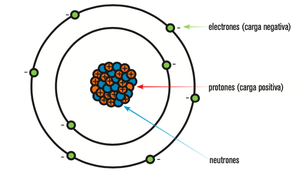
La electricidad es una forma de energía que permite que las partículas cargadas negativamente (electrones) se desplacen de un átomo a otro.
Este desplazamiento de electrones a través de un material conductor se denomina corriente eléctrica. La corriente eléctrica es el paso de electrones de un átomo a otro, dentro de un material conductor.
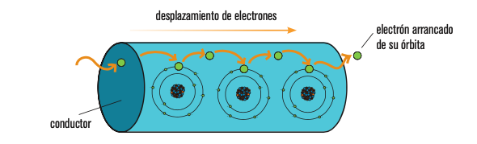 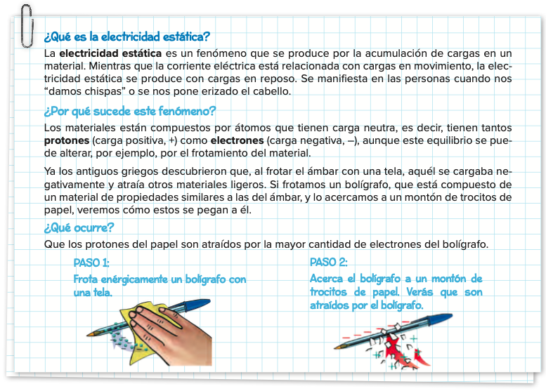
Lectura facilitada
Una estructura se compone de elementos diseñados para resistir las fuerzas externas y evitar así la ruptura o deformación excesiva del cuerpo al que pertenecen.
2. Conductores y aislantes
Los materiales que dejan pasar la corriente eléctrica, como el cobre, el estaño, el aluminio, la plata o el hierro, se llaman conductores.
Los que impiden el paso de la corriente, como el plástico, el papel, la tela o la madera, se llaman aislantes.
Si observas las herramientas que utiliza un electricista, verás que el mango de todas ellas está fabricado de un material aislante, para evitar descargas eléctricas a través del metal de la herramienta. Los cables (por ejemplo, los que se utilizan en el taller o los que forman parte de la instalación eléctrica de una vivienda) están hechos de cobre y recubiertos de plástico, para que no se desvíe la corriente y protegernos de ella.
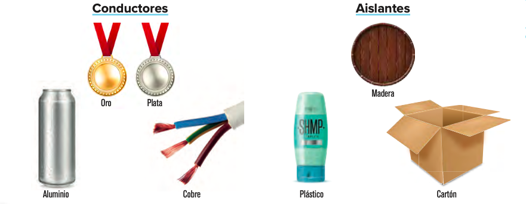
Lectura facilitada
Las estructuras naturales se forman sin intervención humana, presentes en seres vivos o producto de procesos geológicos, como la concha de un molusco, el nido de un pájaro o una cueva.
En contraste, las estructuras artificiales son creadas por humanos, como las patas de una mesa, la carcasa de una cámara o los arcos de un puente.
3. Los circuitos eléctricos y sus componentes
EL CIRCUITO ELÉCTRICO
Un circuito eléctrico es un conjunto de elementos conectados entre sí por los cuales circula la corriente eléctrica y que produce algún efecto (como por ejemplo luz, calor, sonido o movimiento).
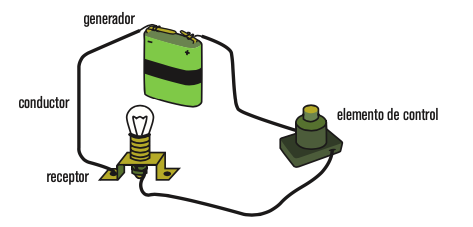
Los circuitos eléctricos constan de cuatro componentes fundamentales:
GENERADORES
Son los elementos que proporcionan al resto del circuito la energía eléctrica necesaria para que se muevan los electrones. Los generadores de corriente continua de un circuito son las pilas y las baterías.
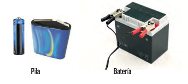
CONDUCTORES
Son los elementos que transportan la energía eléctrica desde los generadores hasta los receptores, o, dicho de otro modo, son los elementos a través de los cuales circula la corriente eléctrica. Los elementos conductores de un circuito son los cables.
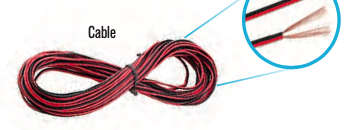
RECEPTORES
Son los elementos que reciben la energía eléctrica procedente de los generadores y la transforman en otros tipos de energía útil. Son recep- tores en los circuitos: los motores, las bombillas, los zumbadores y las resistencias.
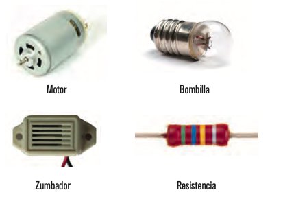
ELEMENTOS DE CONTROL
Son los operadores que gobiernan el circuito, es decir, actúan de forma que permiten o interrumpen el paso de la corriente eléctrica. Los principales son los interruptores, los pulsadores y los conmutadores.
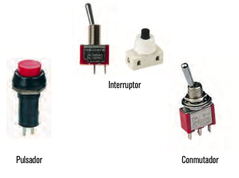
Lectura facilitada
Las fuerzas que afectan una estructura se llaman cargas y se dividen en dos tipos: Cargas Fijas o Permanentes, que no cambian con el tiempo (por ejemplo, el peso de una estructura o elementos permanentes), y Cargas Variables, que pueden cambiar en momentos específicos (como el peso de personas o la fuerza del viento).
Los esfuerzos en las estructuras varían según el punto de aplicación, dirección, sentido y geometría. Se definen como tensiones internas surgidas cuando un cuerpo está sujeto a fuerzas. En resumen, se explora la relación entre fuerzas, cargas y esfuerzos en el contexto de las estructuras.
4. ¿Cómo representamos los circuitos eléctricos? El esquema eléctrico
Cuando queremos representar circuitos eléctricos utilizamos un dibujo muy sencillo denominado esquema eléctrico. Cada elemento de un circuito tiene un símbolo normalizado que permite representarlo de una forma simple y que sea entendida por todo el mundo. La representación simbólica de todos los elementos de un circuito mencionados hasta el momento se incluye en las páginas siguientes.
Observa la figura de la izquierda; en ella tenemos un circuito con una pila y tres bombillas. A la derecha está su esquema eléctrico equivalente.
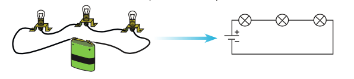
SIMBOLOGÍA DE LOS ELEMENTOS DE UN CIRCUITO ELÉCTRICO
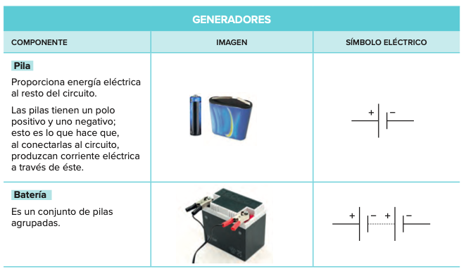
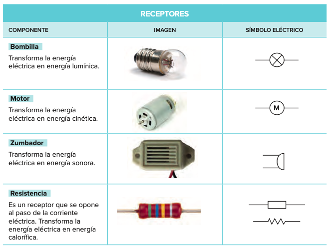
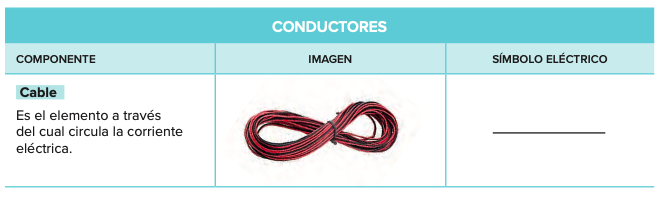
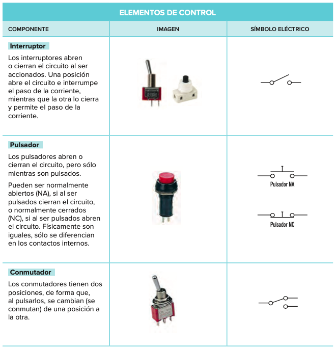
5. En vídeo
Comparamos un circuito eléctrico con un circuito hidráulico
6. Ahora toca practicar
Llega el momento de aplicar lo que has aprendido con estas dos actividades:
Rosco de pasapalabra
Repasa con el rosco de Pasapalabra los conceptos que hemos trabajado hasta ahora. Pincha en este enlace para jugar.
Ejercicio para realizar en el cuaderno
Representa con símbolos cada uno de los siguiente circuitos eléctricos:
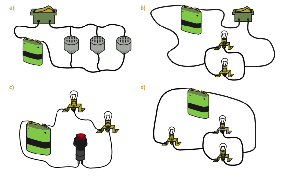
Motus dice ¿Qué es lo que más te ha gustado de la interacción con tus compañeros?
¿Te ha llamado la atención alguna pregunta planteada por alguno de ellos? ¿Se lo has dicho? ¡A todos y todas nos gusta saber lo que hacemos bien!